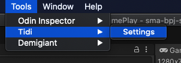
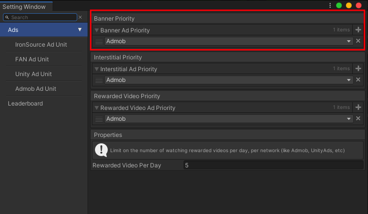
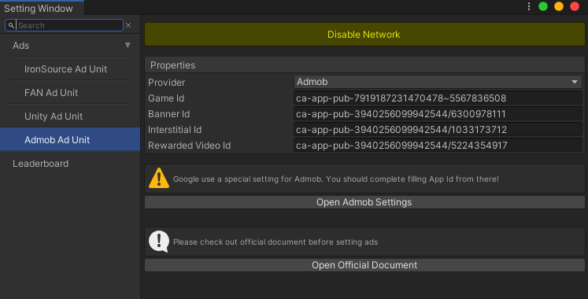
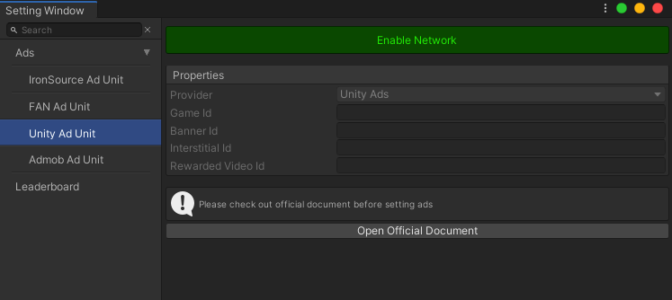
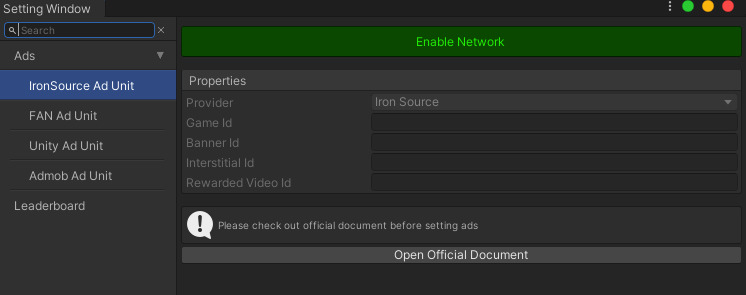
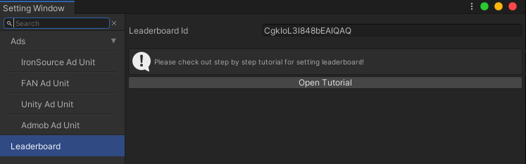
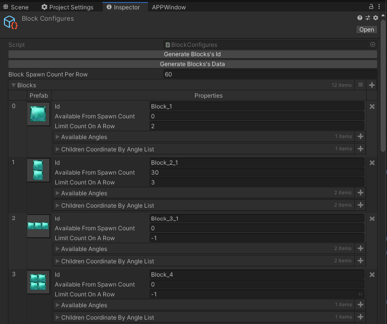

Block Puzzle 1010 StarHi there, thank you for purchasing Block Puzzle 1010 Star!
I can tell you, this source code is not difficult to re-skin. All sprites locate in folder Assets/_MAIN/Textures/GamePlay and packed into an atlas by using Unity Sprite Atlas.
This game has already integrated Admob, Facebook Audience Network, Unity Ads, IronSource, and Google Play Service Leaderboard. They are easily to configure with detail documents below. You should check it out.
Source code is working on Unity 2019.4.14f1 LTS, you should not use on older Unity version.
If you like this source code, please give it a review/rating in the SellMyApp website as it will help me to improve this source code and others.
For bugs, feature requests and a friendly chat, you can send an email to: tidi.productions@gmail.com
I will always answer as soon as possible. Thank you.
Setting WindowOpen Setting Window from menu: Tools/Tidi/Settings

Ad PriorityWe need Ad Priority if multiple Ad Network have enabled. Check out the image below, we use only Admob for showing ad. If we need Unity Ad, FAN, or IronSource, just add them into list. Which first has higher priority.

For enable Ad Network and change Unit Ids, check below.
Ad Unit IdsEnable/Disable Ad Network mean we add/remove Scripting Define Symbols like USING_ADMOB, USING_UNITY_ADS, USING_FAN, USING_IRONSOURCE. If Ad Network has been disable, it should not be in the build.
Check out each Network's official document for creating unit id. Then complete the setting.



LeaderboardCheck out Leaderboard's official documents and complete the setting.

How to add new blockIt is a little complicated to add new block. So I uploaded a step by step video to guide you guys:
There are 3 steps:
You can use an old block in folder _MAIN/Prefabs/Blocks/, duplicate, drag to Hierarchy, unpack prefab, change name, remove Poolable Info script. Then add more Cell Elements, rearrange them. When everything is done, let press the button Setup Block Children. This function will place elements in the right position and store those positions. After that, we can make a new prefab.
Find object PoolBoss in Hierarchy, add new item in category Blocks, drag new Block Prefab into this new item. Tick on property Allow Instantiate More, so Object Pool can create this block more than one. Then Save.
Check out config: _MAIN/Configures/Block Configures.asset, you should see something like that in tab Inspector

Create new block item, scroll to bottom, you can see an empty item. Add prefab, add at least one Available Angles. Then back to top, press 2 buttons: Generate Blocks's Id, Generate Blocks's Data. After saving, you should try to enter the game for testing.
There are some properties maybe you should take notice in Block Configures.asset:
Block Spawn Count Per Row: default is 60. Each spawned block count as one, so after 60 times, some block spawner rule should be reset, like Limit Count On A Row
Limit Count On A Row: default is -1, that mean no limit for this block. If value is 0, this block should never be spawned. If value is >= 1, in each row (60 spawning times), this block can not be spawned more than the limit
Available From Spawn Count: default is 0. This block can be spawned when Spawn Count is >= @value. Some blocks is pretty hard, so you want them only appear after 60 spawning times, let set the value is 60.